Fiche 08 -- Filtrage applicatif¶
La mise en place d'une politique de filtrage, permet à l'administrateur de définir les règles qui permettront d'autoriser ou de bloquer des flux au travers du pare-feu SNS. Selon les flux, certaines inspections de sécurité (analyse antivirale, analyse antispam, filtrage URL, etc.) peuvent être activées sur les pare-feu SNS afin de :
- contrôler les accès à certains sites web d'Internet (filtrage d'URL et filtrage SSL) ;
- créer une politique anti-relais et antispam (filtrage SMTP) ;
- effectuer une analyse antivirale sur les flux DATA (HTTP, SMTP, FTP, POP3, etc.) ;
- bloquer les maliciels à l'aide d'une analyse comportementale sur des machines de détonation (sandboxing Breachfighter).
Configuration du service proxy Web HTTP¶
La fonction de filtrage des URL permet de contrôler l'accès aux sites web d'Internet pour l'ensemble des utilisateurs. Pour contrôler ces accès, la politique de filtrage URL va se baser sur une liste d'URL classées en catégories ou de mots clés personnalisés.
Les bases d'URL disponibles¶
Deux fournisseurs de base URL sont disponibles sur les pare-feu SNS :
- Base URL embarquée composée de 16 catégories téléchargées sur les serveurs de mise à jour,
- Base Extended Web Control (EWC) constituée de 65 catégories, toutes hébergées dans le Cloud. Cette base est disponible en option payante, elle est néanmoins incluse dans les VM du partenariat Stormshield Academy.
- Ouvrir Configuration / Objets / Objets Web onglet Base d'URL. La base par défaut est la Base URL embarquée.
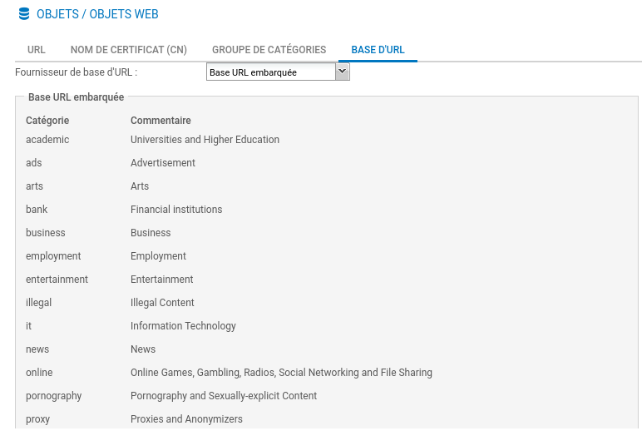
Les catégories prédéfinies pour la Base URL embarquée sont disponibles. Le contenu des catégories ne peut pas être consulté. Cependant, l'appartenance d'une URL à un groupe peut être vérifiée par le biais des champs de classification. Ces champs sont disponibles depuis le menu Objets Web ou au sein d'une politique de filtrage URL.
Par exemple, pour vérifier l'appartenance de Stormshield à une des catégories de la base :
- Ouvrir Configuration / Objets / Objets Web onglet URL.
- Dans la zone Vérifier l'utilisation saisir stormshield.eu et cliquer Classifier.
Le résultat s'affiche dans la zone de commentaires, l'URL stormshield.eu fait partie de la catégorie IT :
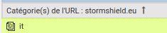
- Au besoin cliquer le symbole au bas de l'écran pour déplier la zone de commentaires.
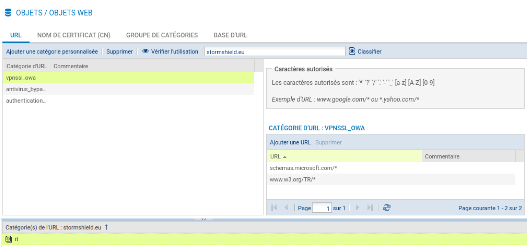
Politique de filtrage d'URL pré-définie¶
Une seule politique de filtrage est prédéfinie par défaut (quelle que soit la politique choisie, ce sont les deux même règles qui apparaissent).
- Ouvrir le menu Configuration / Politique de sécurité / Filtrage URL
-
Dans la liste déroulante des politiques de sécurité, choisissez (0) URLFilter_00.
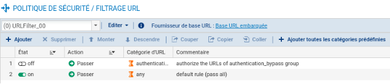
-
La règle numéro 1 (non activée) autorise les URL qui font partie du groupe authentication_bypass qui peut être consulté dans le menu Objets Web, il s'agit des sites qui permettent les mises à jour Microsoft.
-
La règle numéro 2 laisse explicitement passer tous les flux.
-
Les règles de filtrage d'URL sont composées d'une colonne Action et d'une colonne Catégorie d'URL.
- La colonne Action permet de Bloquer ou de Passer ou de rediriger vers l'une des 4 pages de blocage personnalisables.
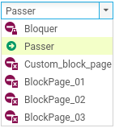
- Catégorie d'URL : La colonne contient la liste des catégories prédéfinies de la base URL embarquée et les catégories personnalisées que vous avez créées.
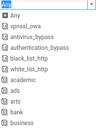
Il convient ensuite de choisir les catégories de sites à autoriser, bloquer ou à rediriger vers l'une des 4 pages de blocage personnalisables. Le contrôle de cohérence en temps réel affiche les erreurs détectées dans votre politique.
Création d'une base URL personnalisée¶
Si les catégories de sites web prédéfinies par votre base d'URL ne sont pas exactement adaptées à vos besoins, il est nécessaire de créer ses propres catégories pour y mettre les URL que l'on souhaite bloquer ou autoriser.
Information importante
Il est recommandé de prévoir au moins une catégorie de type « white list » et une catégorie de type « black list ».
- Dans l'onglet URL, cliquer sur Ajouter une catégorie personnalisée puis donnez-lui un nom (par exemple black_list).
- Dans la zone Catégorie d'URL, cliquer sur Ajouter une URL et saisir par exemple *.badssl.com/*.
Information iminteressante
Le site badssl.com permet d'effectuer de nombreux tests de configuration des navigateurs Internet. En particulier l'URL http.badssl.com permet de tester l'affichage d'une page web en HTTP.
Création d'une règle de blocage¶
Information
Ce qui suit est valable pour n'importe quelle catégorie mais le mode opératoire porte sur la catégorie personnalisée « black_list ».
-
Dans la liste déroulante des politiques de sécurité, choisir une des règles de politique de filtrage d'URL (par exemple, (0) URLFilter_00) et cliquer sur Éditer.
-
Renommer cette politique (par exemple « Proxy_Cub ») et mettre à jour.
-
Se positionner sur la première règle (désactivée) et cliquer + Ajouter pour ajouter une nouvelle règle de filtrage d'URL.
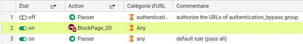
- Au niveau de la deuxième règle, dans Action, laisser BlockPage_00 et dans la colonne Catégorie d'URL, choisir black_list, puis cliquer sur Appliquer puis sur Sauvegarder.
Information
Les pages de blocage par défaut, ici BlockPage_00 peuvent être éditées depuis le menu Configuration ⇒ Notifications ⇒ Messages de blocage ⇒ Onglet Page de blocage HTTP. Les modifications peuvent s'effectuer grâce à l'éditeur HTML, cela permet de personnaliser la page.
Affectation d'une politique de filtrage URL¶
- Ouvrir Configuration / Politique de sécurité / Filtrage et NAT, et choisir la politique de sécurité actuellement appliquée.
- Dans l'onglet Filtrage, ouvrir la ou les règles qui autorisent l'accès à Internet avec le protocole http. Dans l'onglet Inspection de sécurité, dans la zone Inspection choisir, dans la liste Filtrage URL, la politique de filtrage URL à appliquer.
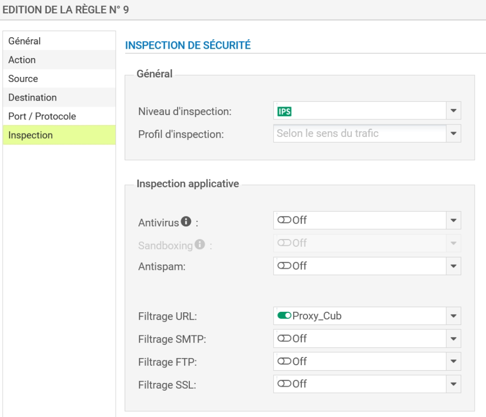
Vous devez obtenir la règle suivante :
A vérifier
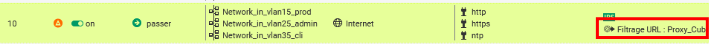
Na pas faire attention à l'avertissement. En cas d'accès à un site en HTTPS, il faudra effectivement d'abord déchiffrer le flux pour pouvoir décider du blocage ou non, ce qui nécessite l'utilisation d'un proxy SSL (voir partie suivante).
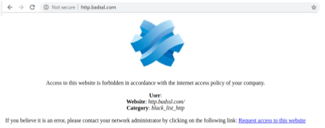
Pour tester
- Ouvrir la page web http.badssl.com depuis votre navigateur, elle ne doit pas s'afficher correctement. Vous devez voir le message de blocage ci-contre :
Configuration du service proxy Web HTTPS¶
De nombreux services réseau tels que le web, la messagerie, la messagerie instantanée, utilisent le protocole SSL/TLS pour authentifier les correspondants et chiffrer leurs communications.
Les pare-feu SNS sont capables de filtrer et déchiffrer les connexions HTTPS, ce qui permet :
- de bloquer des sites web HTTPS ou des catégories de sites web HTTPS inappropriés ;
- d'analyser les flux HTTPS pour les fonctions de protection applicative (e.g., anti-virus, sandboxing, filtrage URL, Google SafeSearch, etc.).
Deux méthodes sont envisageables pour filtrer les connexions HTTPS : avec ou sans déchiffrement des flux SSL. Ces deux méthodes peuvent être combinées en fonction de différents critères, tels que l'authentification, le réseau IP source ou certaines URL de destination.
Principe du filtrage SANS déchiffrement des flux SSL¶
Cette méthode permet de bloquer les sites web HTTPS indésirables en vérifiant seulement leur certificat sans déchiffrer le flux. Ainsi, lorsqu'un client initie une connexion vers un site en HTTPS, il envoie en clair au serveur le nom de domaine du site demandé.
Ce mécanisme appelé Server Name Indication (SNI) permet au serveur de sélectionner le bon certificat à présenter au client. Stormshield Network Security s'appuie sur ce système pour contrôler l'accès à ces sites web sans déchiffrer le flux.
Avec ce type de filtrage, les pare-feu SNS sont compatibles avec les extensions SNI (Server Name Indication), permettant de décrire explicitement le nom de l'hôte avec lequel une session TLS est en négociation. Un message de certificat invalide apparaîtra en cas de blocage puis une page de blocage non personnalisable.
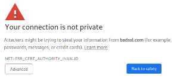
Si vous choisissez Advanced et Proceed, vous aurez accès à la page de blocage du pare-feu SNS :
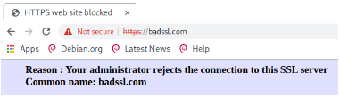
En revanche, cette méthode ne permet pas d'analyser les connexions HTTPS avec les protections applicatives tels que l'anti-virus, le sandboxing, Google SafeSearch.
Information
Une combinaison des deux méthodes (voir ci-après) est plus judicieux.
Principe du filtrage AVEC déchiffrement des flux SSL¶
Le proxy SSL est positionné en « homme du milieu » (Man in the middle) sur le trafic SSL entre le client et le serveur web. Il se charge des négociations SSL et sécurise ainsi les connexions proxy SSL/serveur, et proxy SSL/client. Entre les deux, il autorise ou bloque les connexions selon la politique de filtrage, et si besoin, il déchiffre les flux SSL.
Attention
Le déchiffrement des données personnelles étant encadré par la loi dans la majorité des pays, le filtrage SSL doit prendre en compte cette législation. Vous devez exclure les sites qui ne doivent pas être déchiffrés en leur appliquant l'action Passer sans déchiffrer (e.g., en France les sites bancaires). Pour la France, les aspects juridiques liés au déchiffrement SSL sont détaillés en annexe du document Recommandations de sécurité concernant l'analyse des flux HTTPS de l'ANSSI.
Attention
Il est nécessaire de comprendre les étapes du filtrage SSL.avec déchiffrement et les éléments de configuration pré-définis.
-
Ouvrir le menu Configuration / Politique de sécurité / Filtrage SSL
-
Dans la liste déroulante des politiques de sécurité, choisir par exemple (0) SSLFilter_00.
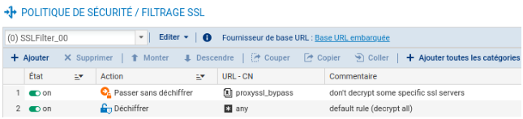
- Éditer un des 10 profils et le renommer (par exemple, renommer (0) SSLFilter_00 en proxy_SSL)
Pour chacune des 10 politiques de filtrage par défaut, deux règles sont présentes. La règle numéro 1 spécifie de Passer sans déchiffrer les URL-CN qui font partie de la catégorie proxyssl_bypass. En effet, ces serveurs détectent que le proxy SSL génère un certificat usurpé et sont susceptibles de refuser les connexions (c'est le cas par exemple de mozilla.org).
La règle numéro 2 spécifie de déchiffrer tous les autres.
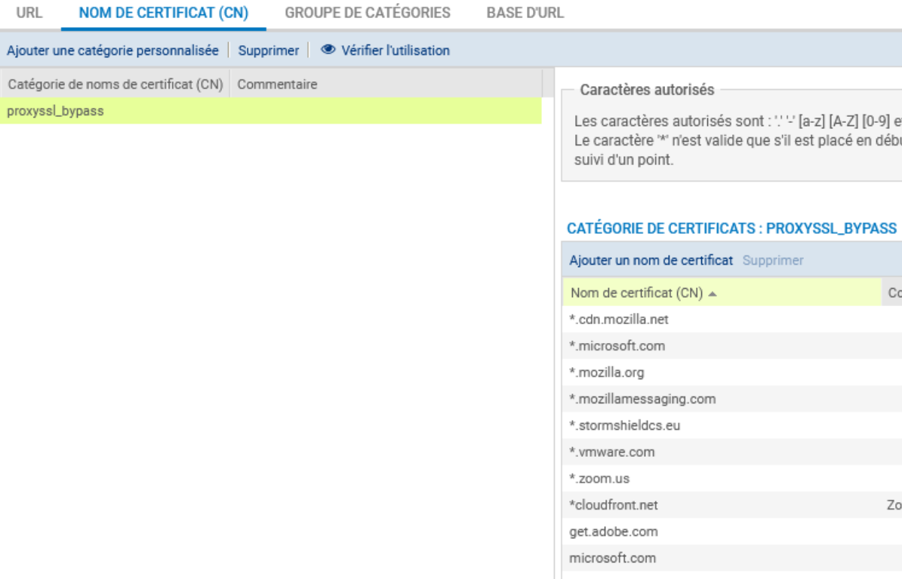
La catégorie par défaut proxyssl_bypass contient donc une liste de noms de certificats que Stormshield recommande de laisser passer sans déchiffrer.
Il est possible d'ajouter ou de supprimer un nom de certificat (CN) de cette catégorie.
- Pour créer, si besoin, une nouvelle catégorie : menu CONFIGURATION ⇒ OBJETS ⇒ Objets Web, dans l'onglet NOM DE CERTIFICAT (CN).
- Pour créer, si besoin, un groupe de catégorie :menu CONFIGURATION ⇒ OBJETS ⇒ Objets Web, dans l'onglet GROUPE DE CATÉGORIES, choisir un objet de type groupe de catégories Certificats. Un groupe de catégories peut être composé de catégories présentes dans la base (EWC ou embarquée), mais aussi de catégories personnalisées.
Une règle définit l'action donc à appliquer pour une catégorie d'URL-CN. Après la réception du certificat serveur et la confirmation que le SNI demandé correspond au CN (common name) du certificat ou à un des noms alternatifs, le SNI est confronté aux règles de filtrage SSL. Dans le cas où une règle correspond, l'action de la règle est appliquée :
-
Déchiffrer : le proxy SSL établit une session TLS avec le > serveur et une autre avec le client en lui présentant le > certificat usurpé.
-
Bloquer sans déchiffrer : le proxy SSL ferme les connexions > TCP avec le serveur et le client après l'établissement des > sessions TLS. Le client recevra quand même le certificat usurpé.
-
Passer sans déchiffrer : le proxy SSL ferme la connexion TCP > après l'établissement de la session TLS et ouvre une deuxième > connexion TCP pour renvoyer les commandes TLS du client.
Attention
Pour les actions Bloquer sans déchiffrer et Passer sans déchiffrer, le trio [IP, port, SNI] est ajouté au cache du proxy SSL pour appliquer l'action dès la réception du SNI lors d'une prochaine connexion au même serveur.
Attention
Pour limiter l'impact du proxy SSL sur les performances du pare-feu, le filtrage SSL peut être utilisé pour passer sans déchiffrer plusieurs sites qui ne représentent pas une menace sur la sécurité de l'entreprise, par exemple les sites de mises jours des systèmes et des logiciels.
Après avoir (si besoin) modifié un profil, il convient d'activer le proxy SSL.
Activation du proxy SSL¶
Méthode 1 : utilisation de l'assistant¶
- Se rendre dans le menu CONFIGURATION ⇒ POLITIQUE DE SÉCURITÉ ⇒ FILTRAGE ET NAT => onglet FILTRAGE pour y ajouter la règle d'inspection SSL.
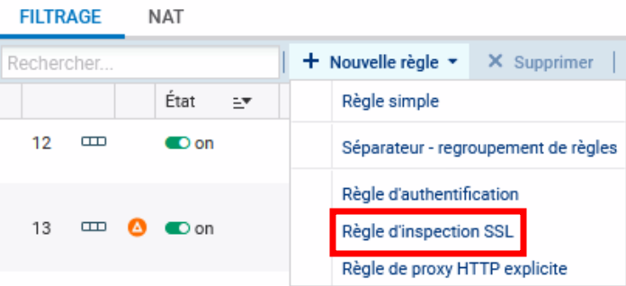
L' assistant « Règle d'inspection SSL » a pour but de créer des règles inspectant le trafic chiffré SSL. Il est conseillé de passer par cet assistant pour la génération des deux règles indispensables au bon fonctionnement du proxy SSL.
Attention
Les deux règles sont créées même s'il y avait auparavant une règle pour le trafic HTTPS. Il ne faut alors garder que la première et modifier l'une des deux règles concernant le trafic HTTPS et supprimer l'autre.
-
Définir, dans la première zone, la politique du trafic à déchiffrer en indiquant :
- les machines sources (« Network_internals » par défaut) ;
- l'interface d'entrée (« any » par défaut) ;
- la destination (« Internet » par défaut) et le port de destination (« ssl_srv » par défaut) parmi la liste déroulante d'objets : il contient les ports standards des services utilisant une session TLS : HTTPS, IMAPS, LDAPS, SMTPS, etc.
-
Définir, dans la deuxième zone :
-
le profil d'inspection : il est possible de choisir un profil défini au préalable
-
Politique de filtrage SSL : il est possible de chosir une politique de filtrage préalablement définie (ou une de celle par défaut). Dans le cas où aucune politique de filtrage n'est configurée, l'action Déchiffrer sera appliquée par défaut pour tous les serveurs.
-
-
Vous pouvez également activer l'Antivirus ou l'Antispam et sélectionner des politiques de filtrage URL, SMTP, FTP ou SSL (vérification du champ CN du certificat présenté).
Afin d'Inspecter le trafic déchiffré via la seconde zone de la fenêtre de l'assistant, vous pourrez définir la configuration du Profil d'Inspection, en choisissant l'une de celles que vous avez définies au préalable ou laisser en mode « Auto ». Ce mode automatique appliquera l'inspection relative à l'origine du trafic.
L'assistant crée deux règles de filtrage :
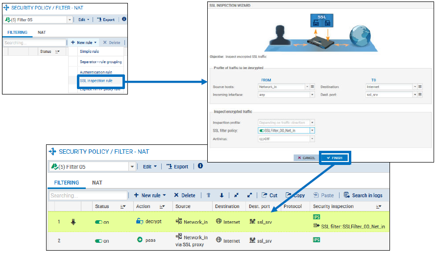
1. La première règle est utilisée pour intercepter les flux provenant du réseau interne à destination d'internet sur le groupe de port ssl_srv. Ces flux sont translatés à destination du proxy SSL qui écoute sur 127.0.0.1:8084. Cette règle applique l'action déchiffrer et le filtrage SSL.
2. La deuxième règle autorise les flux provenant du réseau interne et sortant du proxy SSL (Via SSL proxy) à destination d'Internet. Les protections applicatives (Filtrage URL, Antivirus, antispam, etc.) doivent être activées sur cette règle.
Méthode 2 : création des deux règles¶
- Cliquer Nouvelle règle / règle simple
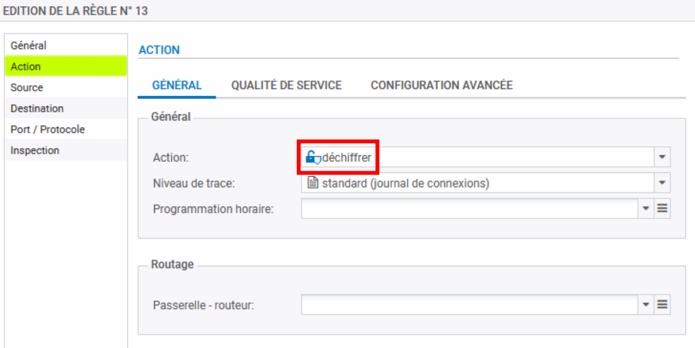
La suite est classique jusqu'à inspection :
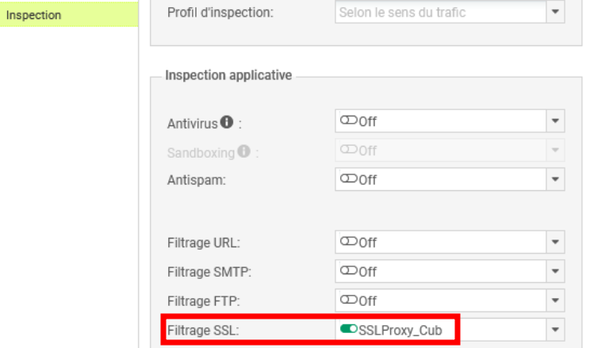
On obtient la règle :
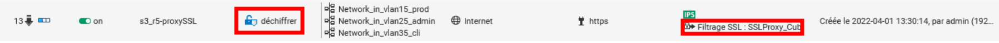
- Cliquer Nouvelle règle / règle simple (ou modifier une règle existante)
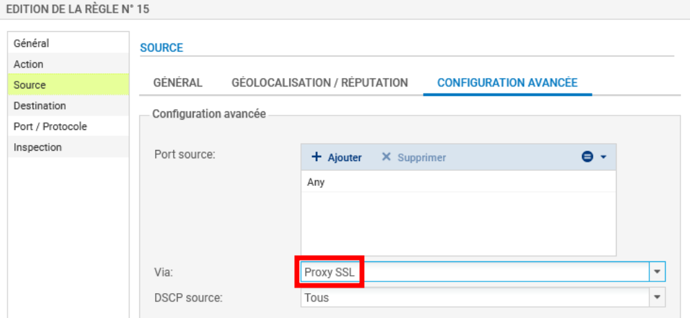
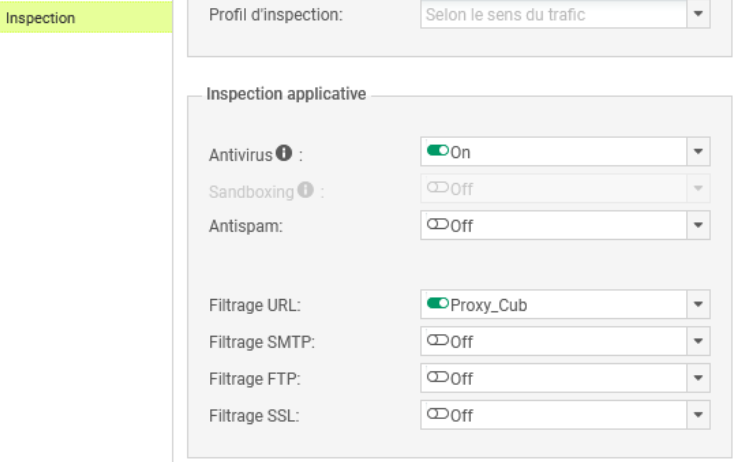
Installation du certificat racine dans les navigateurs
Une fois le proxy SSL activé, le client qui tente de se connecter à un site HTTPS déchiffré, voit une alerte s'afficher dans le navigateur pour l'informer que le certificat reçu n'est pas signé par une autorité connue. Cette alerte s'explique par le fait que le proxy SSL envoie un certificat usurpé signé par une autorité (CA) non publique.
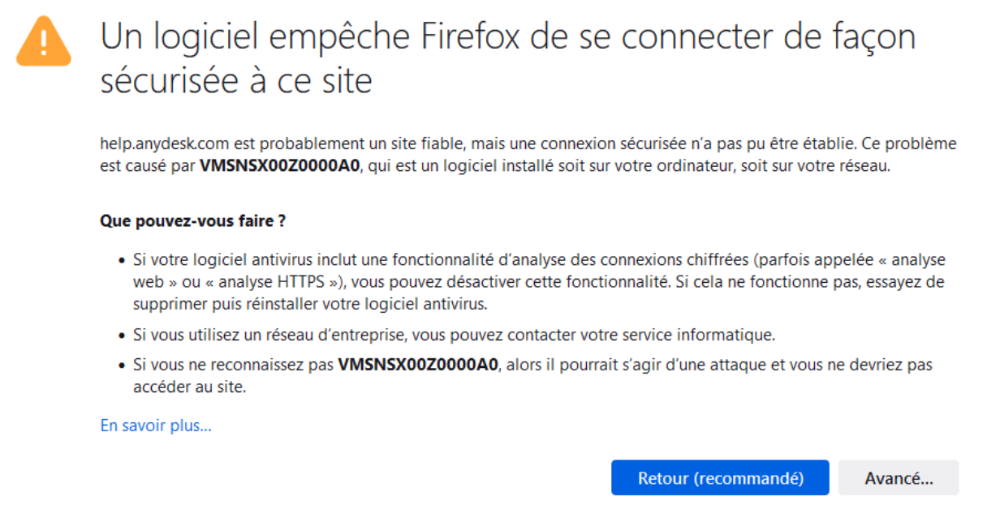
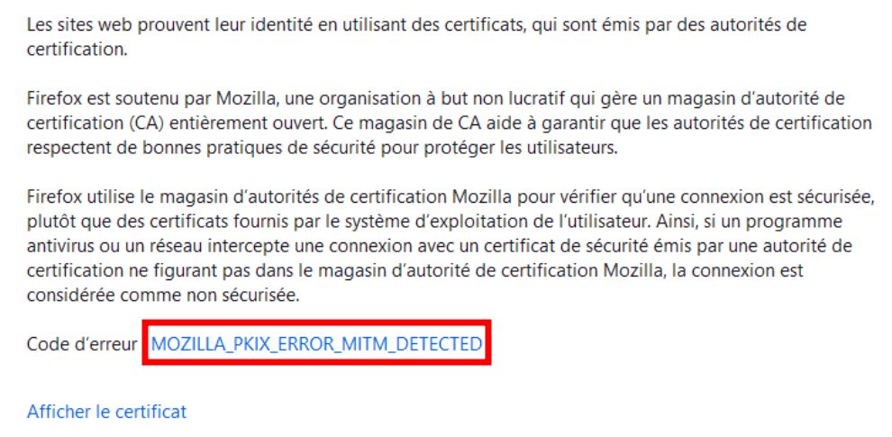
A lire attentivement
Pour éviter l'affichage de cette alerte, il faut installer le certificat de l'autorité de certification racine (CA) utilisée par le proxy SSL dans le navigateur (pour Firefox) ou dans le magasin de certificats du système d'exploitation (pour Internet Explorer, Edge et Chrome) et la déclarer comme une autorité racine de confiance.
Plusieurs méthodes pour récupérer le certificat de le CA utilisée par le proxy SSL, dont :
- Récupérer le certificat de la CA directement depuis le navigateur quand le message d'alerte s'affiche (ou en cliquant sur Erreur de certificat, puis Voir le certificat, mettez la CA racine en surbrillance, et cliquez sur Exporter vers un fichier.
- Ou récupérer le certificat de la CA via l'interface web du firewall, dans le menu CONFIGURATION ⇒ OBJETS ⇒ CERTIFICATS ET PKI
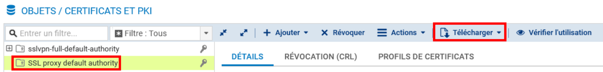
Puis
- Sur Firefox, suivre la procédure ci-dessous :
1. Taper about:preferences#privacy dans la barre de recherche, puis cliquez sur le bouton Afficher les certificats en bas de page,
2. Aller dans l'onglet Autorités et cliquez sur le bouton Importer,
3. Choisir le fichier de la CA racine,
4. Dans la fenêtre Téléchargement de certificats, cocher la case Confirmer cette AC pour identifier des sites web, puis cliquez sur le bouton OK.
5. Vérifier que l'import est effectif (le classement dans Firefox est effectué par le nom d'organisation décrit dans le certificat).
Sur Windows, le certificat est ajouté au magasin de certificats du système d'exploitation, utilisé par les navigateurs Edge et Chrome (et Internet Explorer).
- Suivre la procédure ci-dessous :
1. Cliquer droit sur le certificat à installer et choisissez l'option Installer le certificat,
2. Dans l'assistat, choisir le magasin pour l'Utilisateur actuel,
3. Sélectionner le magasin de certificats Autorités de certification racines de confiance.
Information utile
Dans un domaine Active Directory, il est plus simple d'automatiser le déploiement du certificat de la CA par l'utilisation des stratégies de groupe (GPO).
- Le magasin de certificats de Windows est accessible par le menu Démarrer, Exécuter, tapez certmgr.msc.
Documents¶
Document 1 : Les éléments de configuration par défaut¶
Configuration du proxy SSL¶
La configuration du proxy SSL s'effectue dans le menu CONFIGURATION ⇒ PROTECTION APPLICATIVE ⇒ Protocoles ⇒ SSL ⇒ Profil ssl_01 ⇒ onglet PROXY
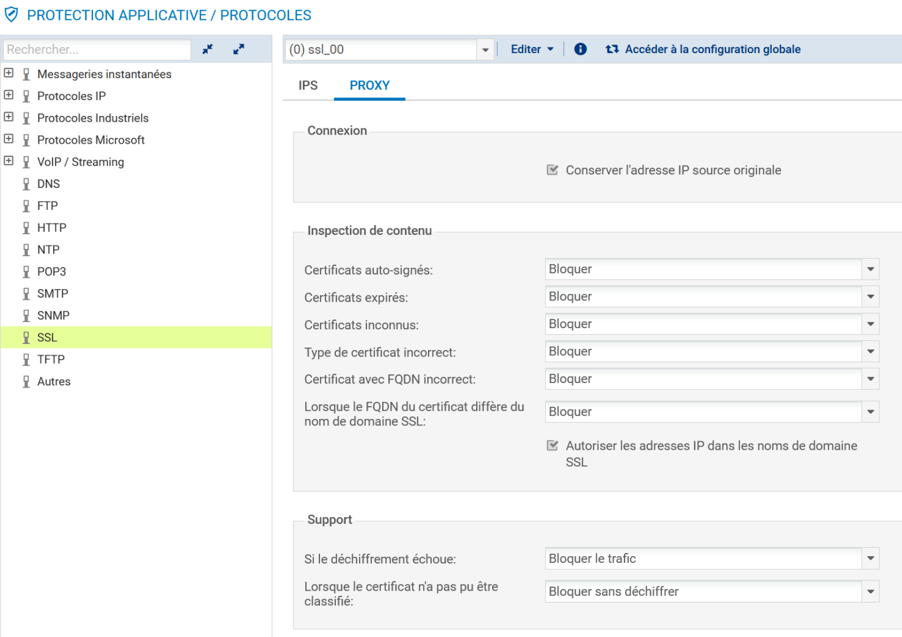
L'encadré Inspection de contenu permet de définir l'action (déléguer à l'utilisateur, bloquer ou continuer l'analyse) qui doit être appliquée par le proxy dans le cas où le certificat présenté par le serveur distant est :
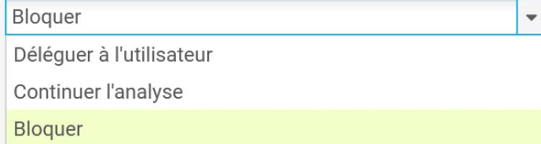
- un certificat auto-signé ;
- un certificat non valide ;
- un certificat signé par une autorité inconnue ;
- un certificat avec un type inconnu ou non conforme ;
- un certificat avec un nom CN incorrect ;
- un certificat dont le CN et les noms alternatifs ne correspondent pas au FQDN du serveur (SNI).
L'option Autoriser les adresses IP dans les noms de domaine SSL permet d'accéder à un site en utilisant son adresse IP à la place de son nom FQDN.
L'encadré Support contient deux options pour définir l'action à appliquer (Bloquer ou Passer sans déchiffrer) dans le cas où le déchiffrement échoue et dans le cas où le certificat ne peut être classifié dans les catégories de la base URL (base embarquée ou Extended Web Control).
Information utile
Dans le cas où l'accès à un site est bloqué par le proxy SSL à cause d'un des contrôles ci-dessus, l'utilisateur voit sur son navigateur un message indiquant la raison du blocage.
Cette configuration par défaut peut convenir dans la majorité des cas.
Gestion des certificats des autorités publiques¶
Lorsque le proxy SSL reçoit le certificat du serveur distant, il vérifie s'il est signé par une autorité de confiance publique ou privée. Les autorités de confiance publiques sont préconfigurées et elles sont mises à jour automatiquement par le module Active Update.
Elles sont accessibles depuis le menu CONFIGURATION ⇒ PROTECTION APPLICATIVE ⇒ Protocoles ⇒ SSL ⇒ Accéder à la configuration globale ⇒ AUTORITÉS DE CERTIFICATION PUBLIQUES. L'interface permet d'activer/désactiver une autorité en cas de besoin.
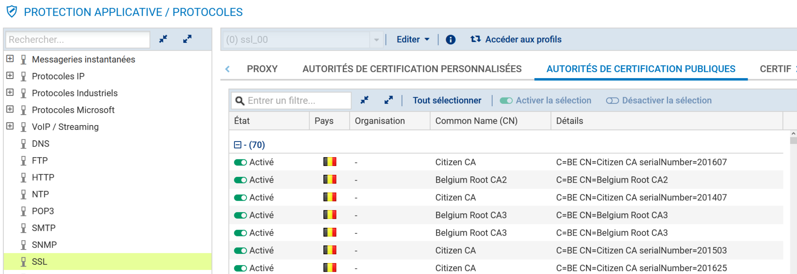
Configuration de l'autorité signataire des certificats usurpés¶
Par défaut, le proxy SSL signe les certificats usurpés avec l'autorité SSL proxy default authority déjà présente sur le firewall. La modification de cette autorité s'effectuedans le menu CONFIGURATION ⇒ PROTECTION APPLICATIVE ⇒ Protocoles ⇒ SSL ⇒ Accéder à la configuration globale ⇒ onglet PROXY.
Il suffit de sélectionner la nouvelle autorité dans C.A (signe les certificats) et son mot de passe dans Mot de passe de l\'autorité.
Information importante
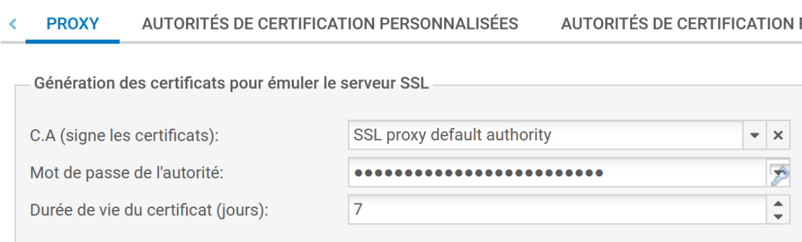
Si vous modifiez le CA par défaut, veillez à sauvegarder son mot de passe dans le cas d'une réutilisation future. Le mot de passe peut être affiché en clair en cliquant sur l'icône représentant une clé.Il est également possible d'ajouter une autorité privée (non publique) de confiance via le menu CONFIGURATION ⇒ PROTECTION APPLICATIVE ⇒ Protocoles ⇒ SSL ⇒ Accéder à la configuration globale ⇒ AUTORITÉS DE CERTIFICATION PERSONNALISÉES. Dans ce cas, vous faites confiance à tous les certificats signés par cette autorité.
Ajouter un certificat serveur se réalise via le menu CONFIGURATION ⇒ PROTECTION APPLICATIVE ⇒ Protocoles ⇒ SSL ⇒ Accéder à la configuration globale ⇒ CERTIFICATS DE CONFIANCE.
Document 2 : Les étapes du filtrage SSL AVEC déchiffrement¶
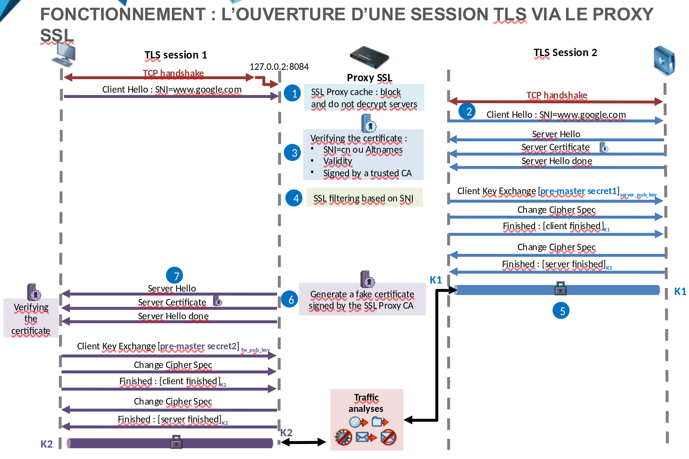
Pour pouvoir analyser les données chiffrées par un tunnel TLS, les firewalls SNS utilisent le proxy SSL qui est positionné comme « homme du milieu (man in the middle) » entre le client et le serveur durant l'ouverture de la session TLS. La figure ci-dessus illustre les différentes étapes de l'ouverture d'une session TLS pour une connexion HTTPS au travers du proxy SSL.
Interception de la connexion par le proxy SSL :¶
La connexion du client sur le port TCP/443 est translatée vers le proxy SSL qui écoute sur 127.0.0.2:8084. Le proxy SSL commence par parcourir un cache contenant une liste de serveurs identifiés par le trio [IP, port, SNI] déjà visités. Ces serveurs peuvent avoir deux états :
-
Bloquer : cet état est dû au fait que le serveur est bloqué par la politique de filtrage SSL avec l'action bloquer sans déchiffrer ou bien le serveur a présenté un certificat qui n'a pas pu être validé par le pare-feu. Dans ce cas, le proxy SSL continue l'ouverture de la session TLS avec le client pour lui envoyer un message de blocage. Aucune connexion ne sera initiée avec le serveur.
-
Passer sans déchiffrer : cet état est engendré par l'action passer sans déchiffrer appliquée à ce serveur par le filtrage SSL. Dans ce cas, le proxy SSL initie une connexion TCP avec le serveur pour renvoyer les commandes TLS du client.
-
Ouverture d'une nouvelle session TLS par le proxy SSL à destination du serveur :
Dans le cas où aucune entrée n'est trouvée dans le cache pour ce site, à la réception du message client Hello qui contient le nom du serveur SNI, le proxy SSL entame une nouvelle connexion TCP et une nouvelle session TLS à destination du serveur.
- Vérification du certificat serveur :
À cette étape, le proxy analyse le certificat envoyé par le serveur. Il mettra fin à la connexion dans les cas suivants :
-
Le serveur ne fournit pas d'informations SSL,
-
Le certificat est auto-signé (ce choix est paramétrable),
-
Le certificat du serveur n'est pas signé par une autorité de certification de confiance et il n'est pas explicitement déclaré en exception (ce choix est paramétrable),
-
Le certificat du serveur a expiré (ce choix est paramétrable),
-
Le certificat du serveur est révoqué (seulement pour une CA « custom » pour laquelle la CRL est accessible),
-
Le serveur demande une authentification,
-
Le SNI ne correspondant pas au CN du certificat ni à aucun des noms alternatifs
Lorsque le certificat serveur n'est pas conforme, l'accès au site est bloqué.
Application du filtrage SSL :¶
Après la validation du certificat, le SNI est confronté aux règles de filtrage SSL pour déterminer l'action à appliquer au serveur :
Déchiffrer, Bloquer sans déchiffrer ou Passer sans déchiffrer. Si c'est cette dernière qui est appliquée, le proxy SSL ferme la connexion TCP avec le serveur une fois la session TLS établie. Puis il ouvre une nouvelle connexion TCP dans laquelle, il renverra les commandes TLS du client.
- Établissement de la session TLS [Firewall -- Serveur] :
Dans le cas où l'action Déchiffrer est appliquée, le proxy SSL finalise l'ouverture de la session TLS avec le serveur. À ce stade toutes les communications entre le pare-feu et le serveur sont chiffrées par la clé K1.
- Génération d'un certificat usurpé (Fake Certificate) :
Si l'action à appliquer est Déchiffrer ou Bloquer sans déchiffrer, le proxy génère dynamiquement un certificat qui présente le CN du certificat du serveur distant ainsi que ses noms alternatifs. Les principales différences dans ce certificat sont les informations de l'émetteur et la signature effectuée par l'autorité dédiée au proxy SSL.
- Établissement de la session TLS [Firewall -- Client] :
Le proxy SSL finalise l'établissement de la session TLS initiée par le client en lui présentant le certificat usurpé. Le client effectue une vérification du certificat. Dans le cas où le certificat de l'autorité signataire n'a pas été préalablement installé, dans le navigateur (pour Firefox) ou dans le système (pour Internet Explorer, Edge et Chrome), et déclaré comme une autorité de confiance, un message d'erreur s'affiche pour signaler au client que l'autorité signataire n'est pas connue. Toutes les communications entre le client et le firewall sont chiffrées avec la clé K2.
Après l'étape 7, le trafic est sécurisé par la session TLS 1 entre le client et le firewall et par la session TLS 2 entre le firewall et le serveur. Ceci permet au firewall d'appliquer les protections applicatives sur le trafic qui transite en clair entre les deux sessions TLS.